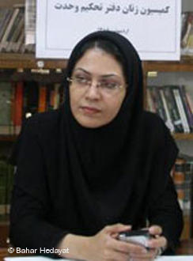
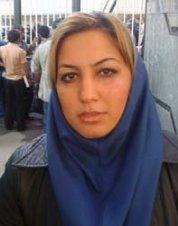

|
|
پیام بهاره هدایت و مهدیه گلرو از زندان برای روز دانشجو
شنبه13 آذر 1389
پیام بهاره هدایت: باور کنیم و آگاه و پر امید ایستاده بمانیم همچنان

به گزارش دانشجو نیوز، بهاره هدایت عضو دربند شورای مرکزی دفتر تحکیم در پیامی به مناسبت ١٦ آذر، روز دانشجو، با دانشجویان سخن گفته است. بهاره هدایت در دیماه سال گذشته برای پنجمین بار بازداشت و پس از چندی در دادگاه به ۹ سال و نیم حبس محکوم شد. این حکم سنگینترین حکم قضایی است که از ابتدای تاسیس اتحادیه انجمنهای اسلامی دانشگاههای سراسر کشور (دفتر تحکیم وحدت) برای یکی از اعضای این تشکل صادر شده است. وی در طول این مدت بارها به سلول انفرادی منتقل شده و همچنین بارها مورد بازجویی های سنگین همراه با فشار قرار گرفته است.
متن کامل این پیام به شرح زیر است:
زیاد نمی گذرد از واپسین خدانگهدار. از آن همه شور و فریاد مستانه که روزگاری با هم سر دادیم که برهانیم خود را از سیاهی. می خواستیم برداریم آن خیز بلند را تا کناره های آفتاب و عشق. می پنداشتیم که آخر، دوران محنت و رنج را نهایتی است و زود است که دست مردم این سرزمین باشد و دامان آزادی. تیر یکدلی بر کمان اتحاد کشیدیم و در میدان نابرابر دست های خالی را به نبرد هیولای استبداد بردیم. نه تنها در خیابان، که حتی به دل لشگر سکوت کشیدیم و با هر بی مهری بغضی بر اندوهی انباشتیم. تا روزی که از هر نفسی گل یاسی بروید یا که داوودی. دانشگاه را نه زندان، که گلستانی می خواستیم پر از تاق های خوش نگار عطرآگین، تا نسیم علم و آگاهی اش از مرزهای هر شهر و آبادی بگذرد. در رویای مان، هیچ سیم خارداری و آهنی دانشجویی را علامت ممنوع الورودی نمی داد. نامه محرمانه ممنوعیت از تحصیل به دست کسی نمی رسید، سایه وحشت از آسمان دانشگاه پر می کشید و استاد به زور چماق خانه نشین نمی شد. همکلاسی برای ارائه پاره ای توضیحات نمی رفت و «یار دبستانی» دیگر بوی حسرت نمی داد.
یاران دبستانی،
ساییده شدیم و نشکستیم و سر خم نکردیم. همچنان ایستاده ایم، اگر چه با دل های تنگ و بی قرار ، نظاره گر تلاش مستبدان برای تاراج گلدانی هستیم که ما و گذشتگانمان برای پروردنش، خون دل به سینه فرو خورده ایم. جفایی که امروز بر دانشگاه و تمامی قلمرو سرزمین مادری و فرزندانش می رود، آخرین تلاش های تاریک دلانی است که دیدگان بیدار جوانان این مرز پر گوهر، خواب آسوده از چشمان بی رمق شان ربوده و هر فریاد آزادی که برخیزد، کابوس آشفته رهایی ما را می بینند... ای کاش رویای شیرین ما کابوس کسی نبود. فغان که به نااهلانی گرفتار آمده ایم که حلقوم، جز به دروغ نمی گشایند و ما را آلوده نیرنگ و کینه یکدیگر می خواهند. مبادا که خود در مقابله با این پلشتی، ضمیر پاک به اتهام زنی و دروغ پردازی بیالاییم که گر چنین کنیم دریچه های قلب به نفرت گشوده ایم و خود گام در مسیر همان تیرگی نهاده ایم.
برادران صبور و خواهران دلیرم،
آذرماه بار دیگر آمده که به زمستانی دیگر پیوند خورد. آذری که ماه ما بود تا به قلب زمستان بزنیم. آذری که همیشه ماه ماست. دیوارهای سرد و سنگ زندان اوین، روزها و شب های بی پایانی است که بیهوده می کوشند میان من و شما جدایی بیفکنند. ولی این سینه همچنان تنگ ١٦ آذرهایی که با هم گذراندیم و بی قرار تمام روزهای سبز و آفتابی پیش روست. میانمان حصار افکنده اند، اما در این سر هنوز هوای آن همه یار دبستانی است که دست در دست هم خواندیم و یاد مشت های گره کرده و فریادهاست که از گلو برکشیدیم که عشق میان ما را هیچ خشت و آهن و سنگی دیوار نمی تواند بود. اندوه و تنهایی را به قلب من راهی نیست. چرا که همدلی هامان وامدار پاکی آیینه هاست. این شب ها و روزهای کشدار، غمگین و سرد، یقینا روزی برای همیشه پر خواهند کشید و شاخه های ترد و سبزرنگ امید، پیچک پنجره هایمان خواهند شد. بدون شک فردای روشن را در کنار هم نفس خواهیم کشید و گلدان ها را در وزش نسیم آزادی لب ایوان ها خواهیم گذاشت. ما در دانشگاه و سرزمینی که آزاد و آزاد و آزاد است به آسمان آبی خواهیم رسید و آن سلام دوباره معروف را به آفتاب خواهیم گفت. بیایید غبار را از ایوان ها بروبیم، آن روز نزدیک است. باور کنیم و آگاه و پر امید ایستاده بمانیم همچنان.
می آیم، می آیم، می آیم
با گیسویم، ادامه بوهای زیر خاک
با چشمهایم، تجربه های غلیظ تاریکی
با بوته ها که چیده ام از بیشه های آنسوی دیوار.....
می آیم، می آیم، می آیم
و آستانه پر از عشق می شود
و من در آستانه به آنها که دوست میدارند
و دختری که هنوز آنجا،
در آستانه پر عشق ایستاده، سلامی دوباره خواهم داد.......
پیام مهدیه گلرو از زندان: به قیمت دانشگاه شدن اوین، دانشگاه زنده بماند

به گزارش سایت رهانا مهدیه گلرو، فعال دانشجویی نیز پیام کوتاهی به دانشجویان فرستاده است .مهدیه گلرو که از دانشجویان محروم از تحصیل و از اعضای شورای دفاع از حق تحصیل بود، روز ۱۱ آذر ماه ۱۳۸۸ همراه همسرش، وحید لعلیپور، بازداشت و به سلولهای انفرادی زندان اوین منتقل شد. همسر او پس از چند ماه آزاد شد اما مهدیه هنوز در بازداشت است. او از ماه گذشته به بند متادون زندان اوین که محل نگهداری زندانیان خطرناک است، منتقل شده و اجازه تماس با خانواده خود را ندارد.
"یاران دبستانی من، اگر در سال ۳۲ سه نفر دانشجو کشته شدند امروز دهها دانشجو در بند هستند. هر چند که این روزها هزینه حرف زدن خیلی سنگین است اما باید به قیمت دانشگاه شدن اوین، دانشگاه آخرین سنگر آزادی زنده بماند. و بدانید که ما نیز در کنار شما در روز ۱۶ آذر یار دبستانی را زمزمه خواهیم کرد."